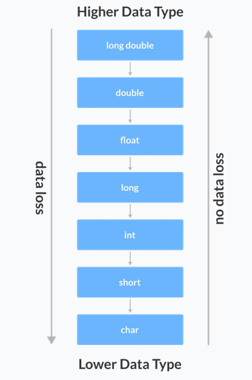

C++ allows us to convert data of one type to that of another. This is known as type conversion.
There are two typws of type conversion in C++:
- Implicit Conversion
- Explicit Conversion (Type Casting)
Why is type casting needed?
Typecasting is essential when you want to change data types without changing the significance of the values stored inside the variable.
Some functions might require input parameters in specified types only. If you try to call them with different types you will get an error. In order to avoid this we use type conversion.
Implicit Type Conversion
The type conversion that is done automatically done by the compiler is known as implicit conversion. This type of conversion is also known as automatic conversion.
Example 1: Conversion From int To double
#include <iostream>
using namespace std ;
int main ()
{
// assigning an int value to num_int
int num_int = 9 ;
// declaring a double type variable
double num_double;
// implicit conversion
// assigning int value to a double variable
num_double = num_int;
cout << "num_int = " << num_int << endl ;
cout << "num_double = " << num_double << endl ;
return 0 ;
}
Output
num_int = 9
num_double = 9
In the example above, we have assigned an int data to a double variable.
Here, the int value is automatically converted to double by the compiler before it is assigned to the num_double variable. This is an example of implicit type conversion.
Example 2: Conversion From double To int
#include <iostream>
using namespace std ;
int main ()
{
int num_int;
double num_double = 9.99 ;
// implicit conversion
// assigning a double value to an int variable
num_int = num_double;
cout << "num_int = " << num_int << endl ;
cout << "num_double = " << num_double << endl ;
return 0 ;
}
Output
num_int = 9
num_double = 9.99
In the example above, we have assigned a double data to an int variable.
Here, the double value is automatically converted to int by the compiler before it is assigned to the num_int variable. This is also an example of implicit type conversion.
Note: Since int cannot have a decimal part, the digits after the decimal point are truncated.
Data Loss During Conversion
As we have seen from the above example, conversion from one data type to another is prone to data loss. This happens when data of a larger type is converted to data of a smaller type.
Explicit Type Conversion
When the user manually changes data from one type to another, this is known as explicit conversion. This type of conversion is also known as type casting.
There are three major ways in which we can use explicit conversion in C++:
- Cast notation (C-style type casting)
- Function notation (old C++ style type casting)
- Type conversion operators
Cast Notation
Cast notation, also known as C-style Type Casting. As the name suggests, this type of casting is favored by the C programming language.
Syntax
(data_type)expression;
For example
// initializing int variable
int num_int = 26 ;
// declaring double variable
double num_double;
// converting from int to double
num_double = (double )num_int;
Function Notation
We can also use the function like notation to cast data from one type to another.
Syntax
data_type(expression);
For example
// initializing int variable
int num_int = 26 ;
// declaring double variable
double num_double;
// converting from int to double
num_double = double (num_int);
Example 3: Type Casting
#include <iostream>
using namespace std ;
int main ()
{
// initializing a double variable
double num_double = 3.56 ;
cout << "num_double = " << num_double << endl ;
// C-style conversion from double to int
int num_int1 = (int )num_double;
cout << "num_int1 = " << num_int1 << endl ;
// function-style conversion from double to int
int num_int2 = int (num_double);
cout << "num_int2 = " << num_int2 << endl ;
return 0 ;
}
Output
num_double = 3.56
num_int1 = 3
num_int2 = 3
Type Conversion Operators
Besides these two type castings, C++ also has four operators for type conversion. They are known as type conversion operators. They are:
- static_cast
- dynamic_cast
- const_cast
- reinterpret_cast
A Cast operator is an unary operator which forces one data type to be converted into another data type.
#include <iostream>
using namespace std ;
int main ()
{
float f = 3.5 ;
// using cast operator
int b = static_cast <int >(f);
cout << b;
}
Advantages of Type Conversion Operators:
- This is done to take advantage of certain features of type hierarchies or type representations.
- It helps to compute expressions containing variables of different data types.
Conversion between string and numbers.